Part A
Exploring the Power of Flow Models
In Part A, I use a pretrained text-to-image flow model to denoise images, generate new ones from pure noise, and then make edits/optical illusions. The model is PixNerd-XXL, which works on 512×512 pixels. Text prompts are turned into embeddings with Qwen3 before they are passed to the model.
Model
PixNerd-XXL
A pretrained text-to-image flow model that makes 512×512 images.
Sampler
Euler, h = 0.02
50 steps when starting from pure noise, and fewer when starting from a noisy image.
Guidance
CFG, w = 7
Classifier-free guidance, with an empty prompt as the unconditional input.
Part A · 1
Training and Sampling in Flow Matching
Flow matching connects Gaussian noise ε at t = 0 to a clean image x1 at t = 1 with a straight line. During training, the model sees a point on that line and learns to predict the line’s velocity, x1 − ε. To sample, I start from noise and follow the predicted velocity until t = 1. Each training path is straight, but the learned sampling path curves, so I take many small Euler steps and predict a new velocity after each one.
Part A · 1.1
Constructing Noisy Training Inputs
For Sections 1.1–1.5 I used my own photo of a waterfall in Yosemite. I sampled one noise tensor and reused it at t = 0.25, 0.50, and 0.75. This is more than adding noise, since the image is also scaled down by t, so the original fades out as the noise takes over.
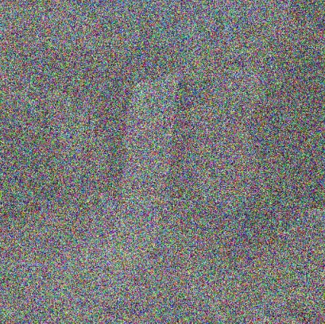
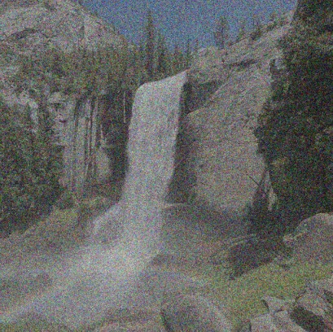
At t = 0.25 only a faint outline of the waterfall shows through. By t = 0.75 the trees and rocks are clear again under a subtle grain.
Part A · 1.2
Classical Denoising
As a baseline without a learned model, I divide the noisy image by t to restore the image’s brightness and then apply a Gaussian blur. For each noise level I tried σ = 1, 2, 4, 8, 16 and kept the one with the lowest mean squared error against the clean photo.
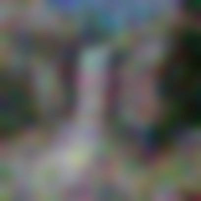
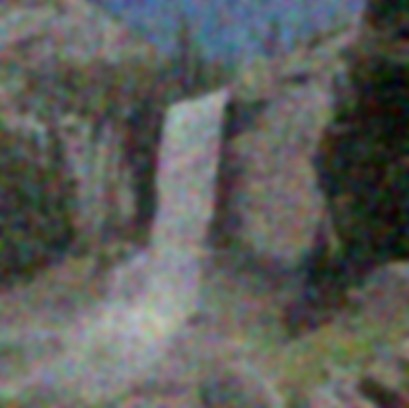
The noisier the input, the stronger the blur has to be, and the more detail it destroys. At t = 0.25 the best blur (σ = 16) leaves only colored blobs. At t = 0.75 a light blur works, but the result is soft and the trees lose their texture.
Part A · 1.3
One-Step Denoising
Next I use the pretrained flow model with the prompt “a high quality photo”. One velocity prediction lets me jump straight from xt to an estimate of the clean image.
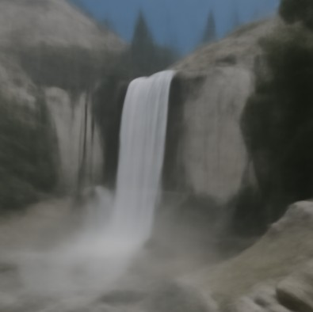

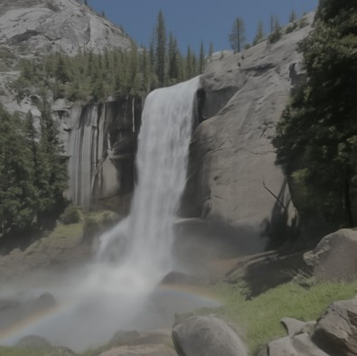
This is much better than the blur. Even from t = 0.25 the model recovers the cliff, the waterfall, and the mist in the right places, but the result looks smooth and painted. One prediction gives roughly the average of all the clean images that could have produced this noisy input, so fine detail like the pine needles gets averaged away. From t = 0.75 the estimate is close to the original, and even the faint rainbow at the bottom left survives.
Part A · 1.4
Visualizing Velocity
Here I look at what the model actually adds in Section 1.3. Because I know the clean image, I also know the exact update it should add, which is (1 − t)vgt = x1 − xt. The predicted and ground-truth updates share one symmetric color scale with zero at middle gray. The error map is the per-pixel RMS difference across RGB, drawn with the same linear scale from 0 to 0.25 at every time.
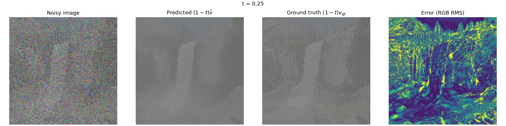
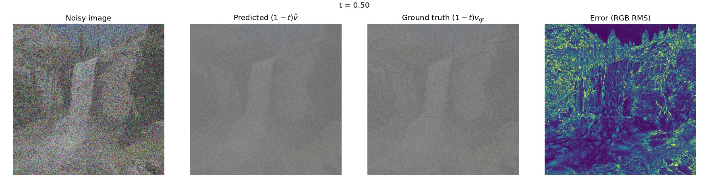
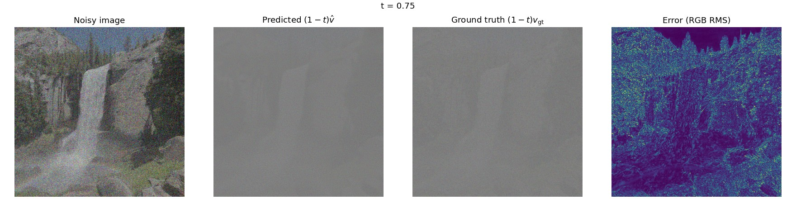
The predicted update has the same overall layout as the ground truth, with the waterfall and the cliff edges in the right places, but it is smoother. The ground truth also contains the exact pixel texture of the rocks and trees, which the model cannot know from a noisy input. That is where the error map lights up. The sky stays dark because it is flat and easy to predict. The error drops a lot from t = 0.25 to 0.75, since there is less left to fix and more of the image to go on.
Part A · 1.5
Iterative Denoising with Euler Sampling
The velocity changes along the path, so I take small steps instead of one big jump. Starting from the t = 0.50 input with h = 0.02, that is 25 updates. The function shortens the final step so it ends exactly at t = 1. I tested it on a constant velocity field first, checking 50 steps from 0, 25 steps from 0.5, and a shortened last step starting from 0.93.
Denoising Trajectory

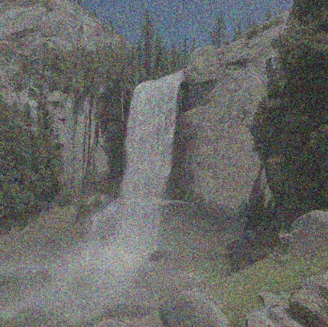
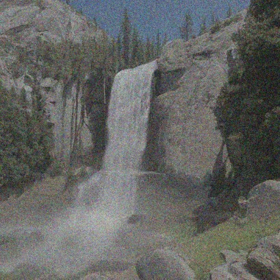
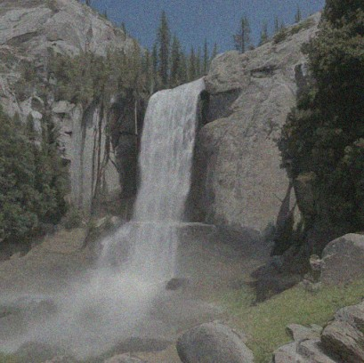
Denoising Methods from t = 0.50
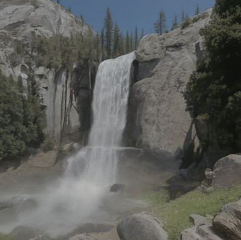
Gaussian Blur
MSE 0.0135
Removes some noise but leaves a grainy, soft image.
One-Step
MSE 0.0084
Lowest error, but smooth and missing fine texture.
Euler, 25 Steps
MSE 0.0099
Looks the most like a real photo, with textured rocks and trees.
The Euler result clearly looks best, since the rock faces, the trees, and the water have real texture again. Its mean squared error is slightly higher than one-step denoising, though. MSE rewards the blurry average, and Euler sampling commits to specific, plausible details that don’t match the original pixel for pixel. The noisy input simply doesn’t contain the exact original texture.
Part A · 1.6
Generating Images from Noise
Starting at t = 0 from pure Gaussian noise, the same Euler sampler generates images from scratch (50 steps). These five samples use the prompt “a high quality photo” with seeds 195–199 and no guidance.
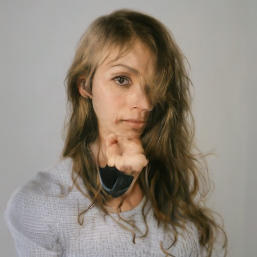
The generic prompt favors people but the quality has high variance.
Part A · 2.1
Classifier-Free Guidance
To improve image quality and prompt alignment, I evaluate the model twice per step, once with the prompt and once with an empty prompt. Then I push the prediction further in the direction the prompt adds. With w = 0 this is ordinary conditional sampling, which I checked with an assert.
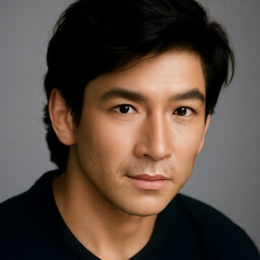
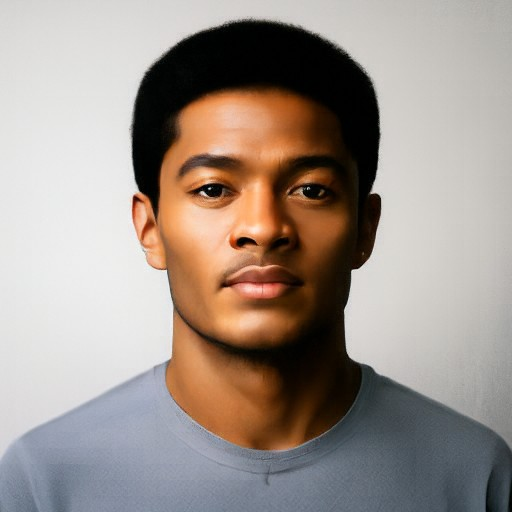
With the same five starting noises, every CFG sample is a sharp, well-lit, coherent photo, with no garbled text or cropped heads. The cost is diversity, because all five are front-facing headshots of a dark-haired man against a plain background. Guidance pulls every seed toward the model’s strongest idea of “a high quality photo.”
Part A · 3.1
Image-to-Image Editing
Adding noise to a real image and denoising it again forces the model to invent the parts the noise destroyed. This is the idea behind SDEdit. I noise the image to a starting time ts and run guided Euler sampling from there to 1. A small ts means more noise and a bigger edit. All edits use “a high quality photo,” w = 7, and the same noise (seed 180).
Campanile
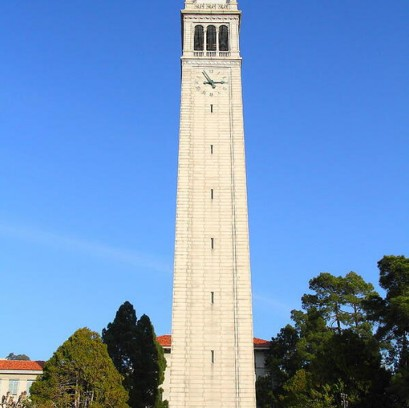
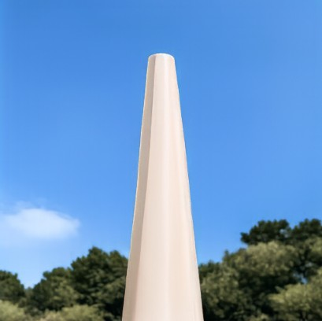
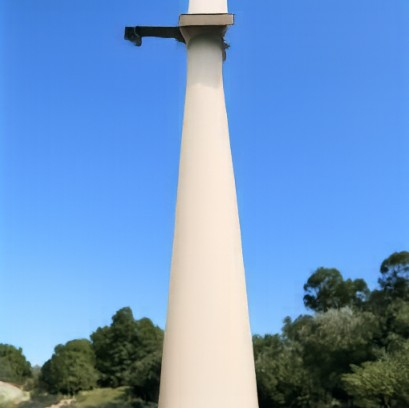
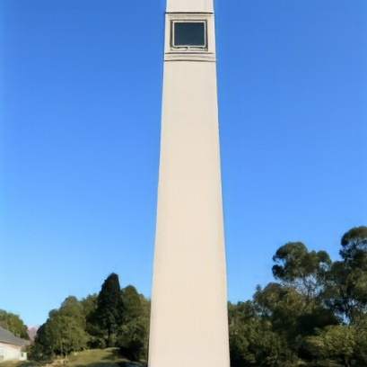
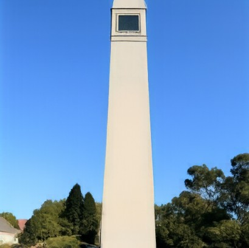
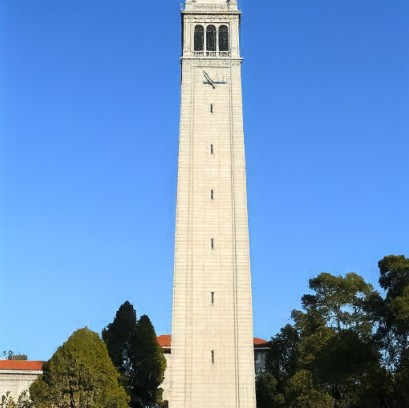
Yosemite Waterfall

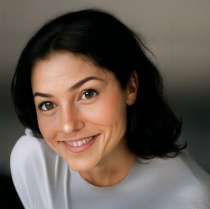
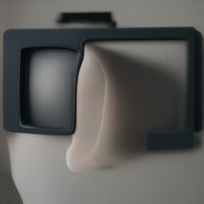
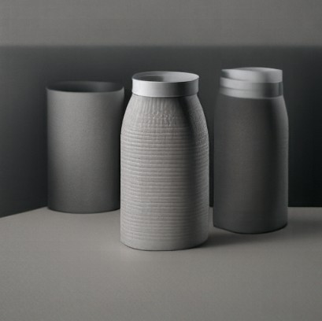
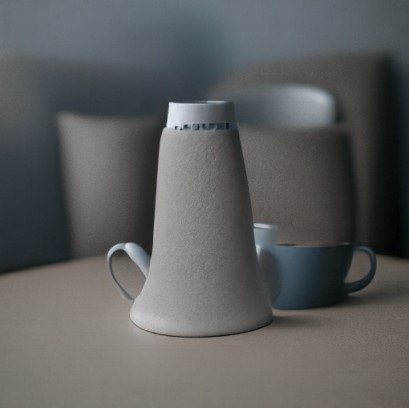
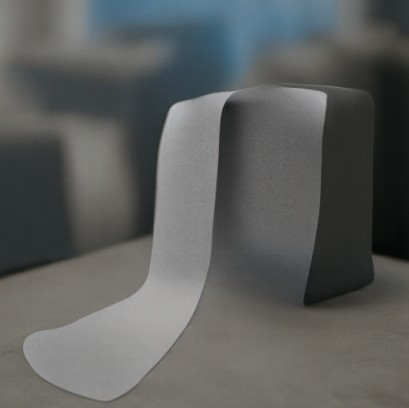
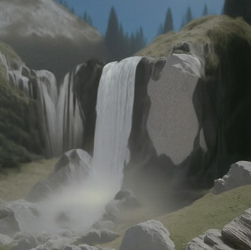
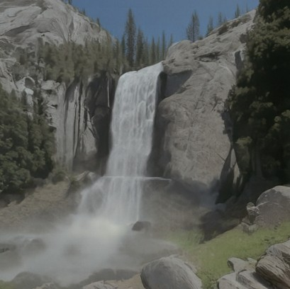
Below 0.25 the model ignores the scene and keeps only its gray tones, producing a portrait and then indoor objects. The waterfall comes back at 0.25.
Beach Sunset
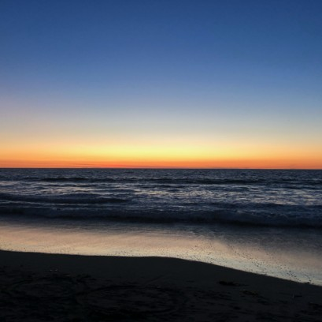
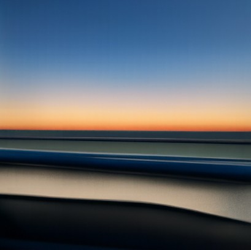
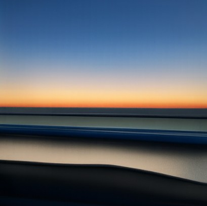
The beach image has very strong horizontal bands, so the model treats it almost like a fence. The beach does appear again in later images.
Editing Web and Hand-Drawn Images
The same procedure is fun with non-realistic inputs, because it pulls them onto the manifold of real photos. I used a pencil drawing of Toothless from the web and two of my own still-life drawings.
Web Image · Toothless
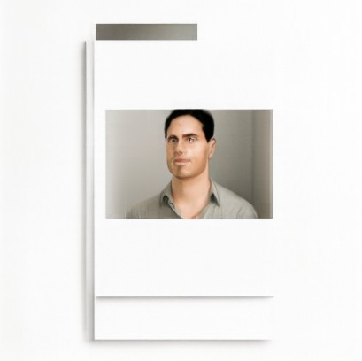
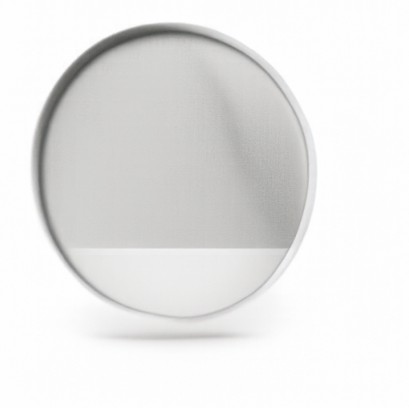
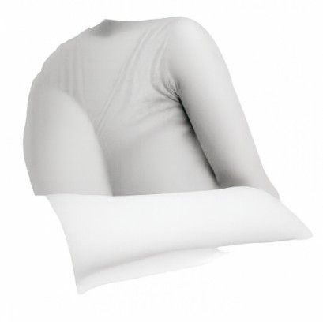
The white background survives every edit, so the model produces product-style photos of white objects like a mirror, a shirt, and a sweater. At 0.14 the sweater and sneakers are arranged almost like a sitting figure. My favorite is 0.25, where Toothless has a crown.
Hand-Drawn · Still Life with Vases
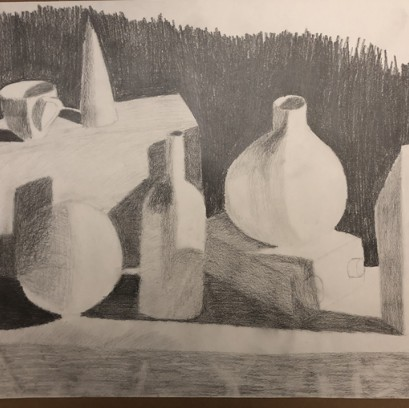
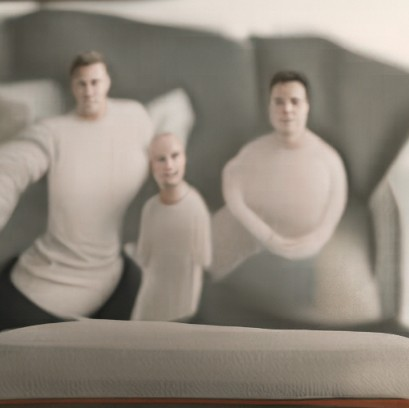
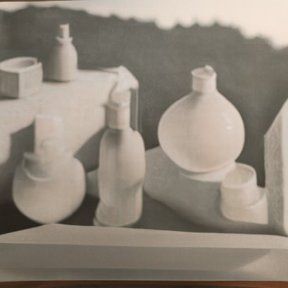
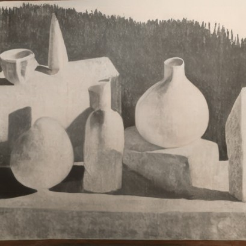
At 0.14 the vases and the bottle become three people sitting on a couch. At 0.25 the drawing becomes what I hoped for, the same still life now as real white ceramics.
Hand-Drawn · Charcoal Still Life
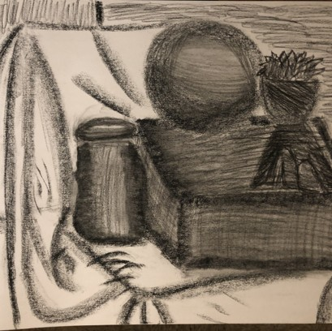
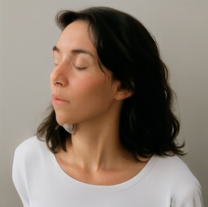
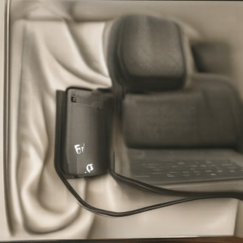
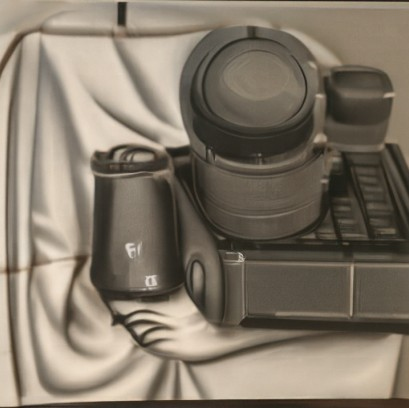
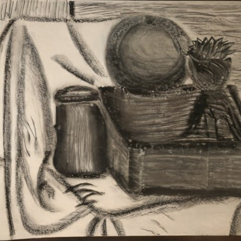
The draped cloth is the first part of my drawing the model keeps (0.10), and it turns into rumpled sheets. The jar and the ball become some sort of tech at 0.25. Four of the six inputs in this section turned into a person at ts = 0.02, which matches the bias toward portraits I saw in Section 1.6.
Part A · 3.2
Text-Guided Image Editing
This is the same editing procedure, but with a prompt that describes the change I want instead of “a high quality photo.” Lower starting times give the prompt more room to change the image, and higher ones keep more of the original.
Campanile → Giant Pencil
“a photograph of a giant pencil”
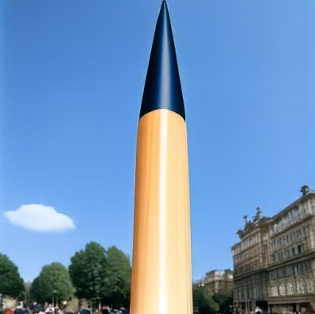
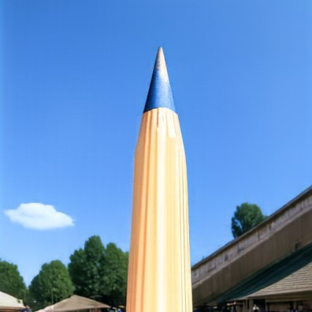
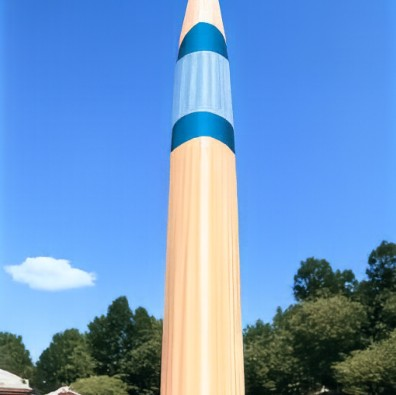
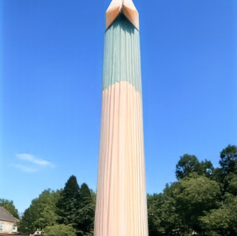
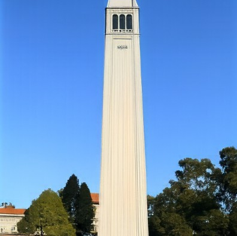
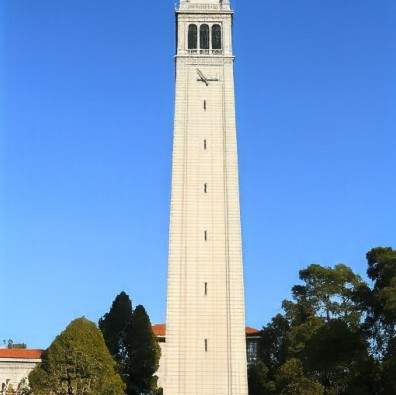
From 0.02 to 0.06 the tower is replaced by a giant pencil standing in the same spot, with the sky, the cloud, and the trees kept. At 0.10 I get a mix of both, a tower painted like a pencil. By 0.25 the prompt has no visible effect anymore.
Waterfall → House on the Waterfall
“a photograph of a house on the waterfall”
My favorites are 0.10 and 0.14. The waterfall and the cliff stay where they were in my photo, and the model builds a house right into the rock above them. At 0.25 the house is almost gone, and only the cliff on the right keeps some walls and windows.
Beach Sunset → Boat
“a photograph of a boat”
At 0.06 a small boat sits on the water in front of my sunset. From 0.10 to 0.25 the model puts a long, flat boat exactly where the line of breaking waves was, the strongest horizontal feature in the photo.
Part A · 3.3
Visual Anagrams
A visual anagram looks like one prompt upright and another upside down. At every Euler step I compute the guided velocity for prompt 1 on the image, and for prompt 2 on the image rotated 180°. I rotate the second velocity back, average the two, and take the step. Rotating twice gives back the original image, which I checked with an assert.
Crowd ↔ City
This one worked really well. The people’s bodies turn into skyscrapers when flipped, and their heads become the reflections in the water under the city.
Castle ↔ Flower
The castle’s spire becomes the flower’s green stem, and the orange turrets become the petals.
Part A · 3.4
Hybrid Images
This is the flow-model version of Project 2’s hybrid images, following Factorized Diffusion. At every Euler step I combine the low frequencies of the velocity for one prompt with the high frequencies of the velocity for another. The low-pass filter is a Gaussian blur with kernel size 265 and σ = 16, and the high-pass is the velocity minus its low-pass. Prompt 1 is what you see from far away, and prompt 2 is what you see up close.
Elephant + Jungle
Up close it is a watercolor of jungle leaves and palm fronds. Shrunk down, the leaves group into an elephant’s head, with two wide ears and a trunk running down the middle.
Dinosaur Skull + Mountains
Up close it is a sepia lithograph of a mountain range. Shrunk down, the peaks merge into a dinosaur skull, with the dark gap between the two main peaks as the eye socket and the lower ridges as the jaw.
Part B
Flow Matching from Scratch
In Part B, I build and train my own UNet on MNIST, first as a one-step denoiser, then as a flow matching model conditioned on time, and finally on time and digit class.
Part B · 1.1
Implementing the UNet
The UNet downsamples a 28×28 digit twice to 7×7, flattens it to a 1×1 bottleneck, and then upsamples back. Skip connections concatenate the encoder features with the decoder features at each resolution. Each simple op is a convolution followed by BatchNorm and GELU. Conv is 3×3 with stride 1, DownConv is 3×3 with stride 2, and UpConv is a 4×4 transposed convolution with stride 2. Flatten is a 7×7 average pool, and Unflatten is a 7×7 transposed convolution. The composed blocks add a ConvBlock (two Convs) after each down or up step.
- ConvBlock 1 → D at 28×28 (skip 1)
- DownBlock D → D at 14×14 (skip 2)
- DownBlock D → 2D at 7×7 (skip 3)
- Flatten to 1×1, then Unflatten back to 7×7
- UpBlock on [skip 3, unflatten], 4D → D at 14×14
- UpBlock on [skip 2, up 1], 2D → D at 28×28
- ConvBlock on [skip 1, up 2], 2D → D, then a 3×3 conv to 1 channel
Part B · 1.2
Using the UNet to Train a Denoiser
To make training pairs, I noise a clean digit x with Gaussian noise scaled by σ, and the UNet learns to map the noisy z back to x with an L2 loss. Each row below uses one fixed noise sample on the first ten test digits, for σ from 0 to 1.
σ = 0.0
σ = 0.2
σ = 0.4
σ = 0.5
σ = 0.6
σ = 0.8
σ = 1.0
Part B · 1.2.1
Training
I trained the denoiser for 5 epochs at σ = 0.5 on the MNIST training set. The noise is drawn fresh every time a batch is loaded, so the network never sees the same noisy image twice.
Data
Batch 256
Shuffled MNIST training set, 5 epochs (1,175 steps).
Model
D = 128
The unconditional UNet from Section 1.1.
Optimizer
Adam, 1e-4
MSE loss against the clean digit.
Test Set Results · σ = 0.5
Clean
Noisy
Epoch 1
Epoch 5
The loss falls very fast in the first 100 steps and then keeps creeping down. After one epoch every digit is already readable, but the strokes are a bit soft and the 1s and 4s have faint smudges around them. After five epochs the strokes are sharper and the background is clean.
Part B · 1.2.2
Out-of-Distribution Testing
The denoiser was only trained at σ = 0.5. Here I keep the same three test digits and the same noise sample, and vary σ.
σ
Noisy
Denoised
Noisy
Denoised
Noisy
Denoised
Up to σ = 0.6 the denoiser works almost perfectly, and at σ = 0 it simply passes the digit through. Above the training level it breaks down, and at 0.8 and 1.0 it leaves noise behind and starts inventing strokes. The 7 picks up extra marks, and the 1 turns into a looped scribble. It learned to remove noise of one specific strength, so stronger noise gets read as part of the digit.
Part B · 1.2.3
Denoising Pure Noise
To try using the denoiser as a generator, I trained a fresh D = 128 UNet with the same settings, but the input is now pure Gaussian noise and the target is still a clean digit.
Input
Epoch 1
Epoch 5
Prediction vs. Mean Training Digit
Every output is the same blurry blob, no matter which noise goes in, and epochs 1 and 5 look the same. The blob is almost identical to the pixel-wise mean of all 60,000 training digits, a soft oval that looks like a faint 0 and 8 laid on top of each other. The input noise is independent of the target digit, so it carries no information about which digit to produce. Under an MSE loss, the best single answer is then the point closest to all training images on average, their centroid, which is the mean image. The loss plateaus around 0.067 because that is the average per-pixel variance of the digits around the mean, the lowest error any prediction that ignores its input can reach. One-step denoising can’t generate digits, which is why Part 2 switches to iterative flow matching.
Part B · 2.1
Adding Time Conditioning to the UNet
Flow matching moves from noise x0 to a digit x1 along a straight line, and the UNet learns the velocity of that line. Because the right velocity depends on t, the UNet needs t as an input. Two fully connected blocks, FCBlock (Linear–GELU–Linear), embed the scalar t ∈ [0, 1]. The first one (2D channels) scales the unflatten output, and the second one (D channels) scales the output of the first up block.
Part B · 2.2
Training the Time-Conditioned UNet
Each training step picks a batch of digits, a random t for each one, and fresh noise. It builds xt and regresses the UNet output onto x1 − x0.
Data
Batch 64
Shuffled MNIST, 10 epochs (9,380 steps).
Model
D = 64
Time-conditioned UNet, t sampled uniformly in [0, 1].
Optimizer
Adam, 1e-2
ExponentialLR with γ = 0.11/10, stepped each epoch.
The loss starts near 15 because the high initial learning rate makes the first predictions very large, but it drops below 1 within a few dozen steps and settles around 0.1. The scheduler shrinks the learning rate tenfold over the 10 epochs, from 1e-2 to 1e-3.
Part B · 2.3
Sampling from the Time-Conditioned UNet
To sample, I start 40 images from Gaussian noise at t = 0 and take 50 Euler steps with the predicted velocity. Every epoch uses the same seed, so each cell starts from the same noise in all three grids.
After one epoch the samples are blobby, broken strokes. By epoch 5 most of them are connected, digit-like shapes, and many are readable 0s, 1s, 4s, and 9s. By epoch 10 the strokes are smooth and most samples are legible, though a few are still ambiguous shapes somewhere between two digits. Because the noise is fixed, you can watch the same sample improve. The 1 in the second column and the 0 in the second row stay put and get cleaner.
Part B · 2.4
Adding Class Conditioning to the UNet
To control which digit gets generated, I also condition on the class as a one-hot vector. Two more FCBlock modules embed it. The class embedding scales the unflatten output and the output of the first up block, and the time embedding shifts them. To keep an unconditional mode for classifier-free guidance, the class vector is zeroed out 10% of the time during training.
Part B · 2.5
Training the Class-Conditioned UNet
Training is the same as the time-only model (batch 64, D = 64, Adam at 1e-2 with the same exponential schedule, 10 epochs), plus the class labels and the 10% dropout mask. I saved checkpoints after epochs 1, 5, and 10.
Part B · 2.6
Sampling from the Class-Conditioned UNet
Sampling uses 300 Euler steps and classifier-free guidance with γ = 5. Note that Part B writes guidance as u = uu + γ(uc − uu), so γ = 1 is plain conditional sampling. Each grid shows four samples of every digit, with columns 0 through 9.
Class conditioning makes a huge difference. Even after one epoch almost every sample is the right digit, although the strokes are thick and rough with stray specks. By epoch 5 the digits are clean, and by epoch 10 they are smooth while the four samples of each digit still vary in slant and style.
Removing the Learning Rate Scheduler
The exponential scheduler starts at 1e-2 and ends at 1e-3. The high early rate is only there for speed, and it is also what causes the large loss spike at the start. To compensate for removing the scheduler, I trained a second, independent model with a constant learning rate of 1e-3, the value the scheduler ends at. Adam adapts its step size per parameter, so 1e-3 is still fast enough to converge in 10 epochs, and it avoids the unstable start. Everything else is unchanged.
With Scheduler
Loss 0.0854
Average over the last 500 steps. Starts with a spike near 9.
Constant 1e-3
Loss 0.0838
Average over the last 500 steps. Starts near 1.5.
Verdict
Same Quality
The epoch 10 samples are comparable, so the scheduler is not needed.
Without the scheduler the model is just as good. The final loss is even slightly lower (0.0838 vs. 0.0854), and the epoch 10 samples are just as clean. The constant-rate model is actually better early on, since its epoch 1 samples are already mostly clean, while the scheduled model’s epoch 1 samples are still rough from the unstable start at 1e-2. One small difference is that the 5 in the third row stays a little broken in the constant-rate model.
Takeaway
The most interesting thing I learned is the idea of an image manifold. Real images take up a tiny, structured part of the space of all possible pixel values, and a flow model learns how to get there. It is amazing that we can start from pure noise and end up with a real image, or take a rough drawing and pull it onto that manifold to get a photo. This makes me wonder whether we can do the same for robotics. If the actions that actually complete a task also lie on a manifold, an action manifold, then a robot could start from random actions and refine them into useful ones, conditioned on what it sees, just like I refined noise into digits conditioned on a class.